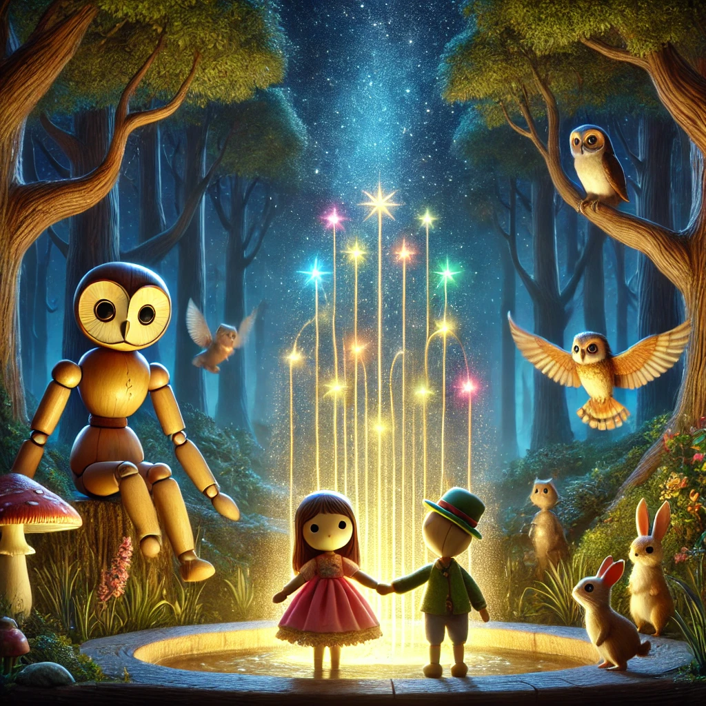

La Fuente de los Sueños: La Aventura de Alondra y Puppet

Había una vez, en un pequeño taller lleno de magia, un títere llamado Puppet. Puppet era diferente a los demás títeres porque tenía un corazón de madera que latía con amor y amabilidad. Cada noche, cuando el reloj del taller marcaba las doce, Puppet cobraba vida y exploraba el mundo que lo rodeaba.
Una noche, Puppet decidió aventurarse más allá del taller. Caminó por el bosque y llegó a un pequeño pueblo donde conoció a una niña llamada Alondra. Alondra era una niña curiosa y aventurera que amaba escuchar historias y soñar con mundos mágicos.
Puppet y Alondra se hicieron amigos al instante. Juntos, emprendieron un viaje para encontrar la Fuente de los Sueños, un lugar legendario donde se decía que los deseos se volvían realidad. En su camino, se encontraron con muchas criaturas maravillosas: un búho sabio que les dio consejos, un conejo veloz que los ayudó a cruzar un río y un gato travieso que les mostró el camino correcto.
Finalmente, llegaron a la Fuente de los Sueños. Alondra cerró los ojos y pidió un deseo muy especial: que Puppet pudiera vivir y ser su amigo para siempre. La fuente brilló con una luz mágica, y de repente, Puppet sintió algo diferente. Su corazón de madera se transformó en un corazón de verdad.
Desde ese día, Puppet y Alondra vivieron muchas aventuras juntos. Cada noche, cuando el reloj marcaba las doce, continuaban explorando y descubriendo nuevos lugares llenos de magia y alegría.
Y así, Alondra y Puppet demostraron que con un corazón lleno de amor y un amigo leal a tu lado, todos los sueños pueden hacerse realidad.
Y colorín colorado, este cuento se ha acabado. Buenas noches, Alondra. ¡Dulces sueños!